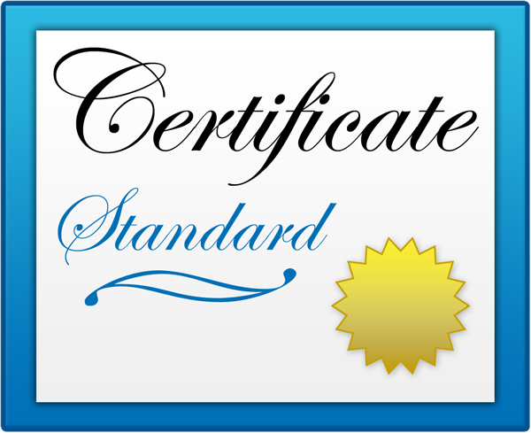
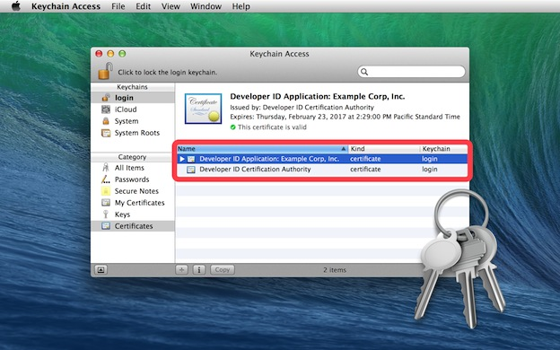

|
 |
Security is an important focus of OS X. And one aspect of delivering a secure computing environment is to determine which applications are allowed by GateKeeper to run on the host computer. The new Code Signing export controls in AppleScript Editor and Automator make it possible to deliver automation tools in a more secure fashion. |
Do I need to be involved with Code Signing?
If you only write and run Automation applets on your own computer, the answer is: no. Continue writing and running scripts and applets as you always have. For you, nothing has changed—security-wise, that is. However, if you create Automation applets intended to be used by others on their computers, then Code Signing is an important issue you need to address.
What does Code Signing do?
Code Signing is a defense against malware. Code signing your applet assures users that it is from a known source (you) and that the applet hasn’t been modified by someone since it was last signed. Before your Automation applet or droplet can be installed and run on an OS X device using the standard GateKeeper security settings, it must be signed with a digital certificate issued by Apple.
Do I need to be a member of the Apple Developer Program to request signing certificates?
Yes, Apple Developer Program membership is required to request, download, and use signing certificates issued by Apple.
But I’m not a “real developer” who creates apps to place on the Mac App Store, I just write scripts. Do I still need to an Apple Developer?
As is mentioned above, if you create and distribute Automation applets for others to use, it is worthwhile to consider becoming an Apple Developer. Don’t worry, you won’t be required to use Xcode or learn Objective-C (although that’s something that would be handy for writing AppleScript/Objective-C automation tools). You can continue to create scripts and applets using the AppleScript Editor and Automator applications, as you currently do.
The details of becoming an member of the Apple Developer Program can be found here.
Once you’ve joined the Apple Developer Program, you can use the developer website to generate and download your unique Apple signing certificate.
To install the certificate on the computer used to create your automation applets:
DO THIS ►Launch the Keychain Access application (found in the Applications > Utilities folder), and choose Import from the Keychain Access File menu.
In the forthcoming file chooser dialog, locate and select your downloaded certificate file, and click the Open button.
The certificate will be installed and displayed in the list of installed certificates (⬇ see below) . That’s it! You’re ready to sign applets using the AppleScript Editor or Automator.
